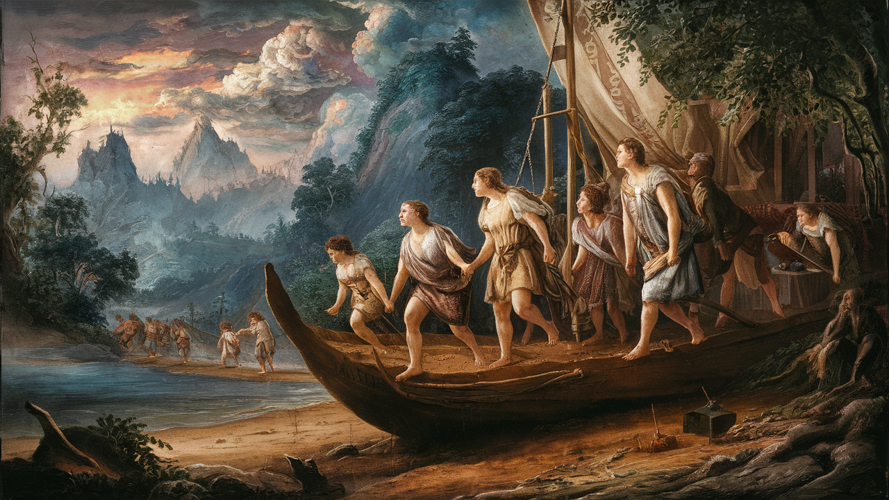
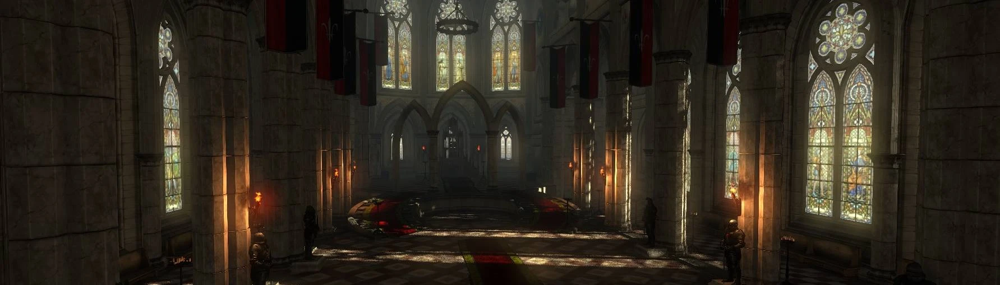

Se dice que las antiguas historias enanas sostienen que los habitantes más antiguos de este rincón
del mundo fueron los gnomos, aunque otros afirman que hay indicios circunstanciales de qué razas
como los vrans o los casi extintos bobolakos también se remontan a miles de años.
Como es posible que tú mismo hayas supuesto, resulta difícil por lo tanto determinar si en verdad
los gnomos fueron los primeros moradores de estas tierras. Sin embargo, es bien sabido que tenían
pequeñas colonias en las montañas de Mahakam y Tir Tochair mucho
antes de la llegada de los enanos, hace tres o cuatro mil años.
El encuentro entre gnomos y enanos fue sorprendentemente pacífico. A decir verdad, tal vez fuera el
único caso en que los recién llegados no iniciaron su asentamiento librando una guerra contra los
nativos, si bien no es tan sorprendente al tener en cuenta las preferencias y hábitos similares de
ambas razas, algo que les permite coexistir dentro de una sociedad sin muchas tensiones ni luchas
internas. De hecho, sus buenas relaciones prosiguen hasta nuestros días.
Los siguientes en llegar fueron los elfos. Es muy probable que vinieran de otro mundo, Sin lugar a
dudas a través de puertas mágicas o portales de alguna índole. Aparecieron hace unos dos mil
quinientos años en sus barcos blancos, y de inmediato iniciaron una colonización gradual de la
región que se alargó unos diez siglos. Esta expansión fue relativamente pacífica, aunque hubo
algunos conflictos. El caracter de los elfos no era (ni es) el más amistoso, por lo que es fácil
suponer que se enfrentaron a otras razas, como los vrans, los enanos o los
bobolakos. Estas disputas, sin embargo, jamás se convirtieron en guerras ni en intentos de
exterminar a los vecinos. Tal vez sea esa la razón por la que, pese a sus diferencias culturales y
enemistades pasadas, las relaciones entre elfos y enanos aún siguen siendo bastante amistosas.
La llegada de los humanos.

Es bien sabido qué esta raza llegó a este mundo durante la Conjunción de las Esferas
com el gran cataclismo mágico que sigue siendo en gran medida un misterio hasta estos días. Ese
suceso tuvo lugar hace unos mil quinientos años, según cálculos humanos. Resulta difícil determinar
cuánto duró ese proceso, pero como resultado aparecieron muchísimas criaturas que no eran
originarias de este mundo.
La Conjunción de las Esferas también dio origen a otro fenómeno, a saber, la
magia, que fluyó en nuestro mundo y se convirtió en parte esencial de este.
Aunque, como ya hemos mencionado, han transcurrido quince siglos desde aquel momento, la expansión
humana propiamente dicha por la región ahora conocida como los Reinos del Norte
comenzó hace unos quinientos años. Fue entonces cuando tuvo lugar el acaecimiento ahora denominado
"el desembarco de los exiliados", cuando naves repletas de los humanos que fundarían los
Reinos del Norte recalaron en el delta del Pontar y la
desembocadura del Yaruga.
Es difícil decir de dónde procedían los exiliados coma ya que, por extraño que parezca, las leyendas
no mencionan ese detalle crucial. Tampoco está claro cómo tuvo lugar ese primer desembarco ni
quiénes fueron los primeros en toparse con los recién llegados. Si los exiliados encontraron otras
tribus humanas aquí, debieron de asimilarlas con rapidez, ya que no hay rastro alguno en las
crónicas de algo semejante. Sea como fuere, es casi seguro que se encontraron con los elfos, que,
como una de las razas ya asentada, cabaron descubriendo las ambiciones de los nuevos colonos muy a
su pesar.
Alguien podría preguntar: ¿quién necesita un mutante creado ex profeso cuya vida está consagrada a
matar monstruos? Todo comenzó hace siglos, cuando llegaron los humanos. En aquel entonces, el mundo
era diferente: bosques impenetrables abarcaban lo que hoy son campos, prados y huertos fértiles, y
la gente empezaba a despejarlos con achas y fuego. Poco a poco, los humanos expulsaron a los
antiguos habitantes de aquellos territorios -los vrans
<, los elfos y los bobolakos- hacia el interior de la espesura y las montañas. Aun así,
aquellas razas no eran la principal amenaza con la que se enfrentaban aquellos viajeros y
colonos de aquellos asentamientos fronterizos.
El auténtico peligro era doble: en primer lugar, los depredadores naturales que vivían en los valles
de las montañas y los claros de los bosques pronto aprendieron que el ganado de pastoreo y los
animales de tiro eran una comida fácil, servida en la proverbial bandeja. Por supuesto, tampoco
rechazarían un refrigerio de pastor o vaquero, si el hombre en cuestión no huía a tiempo. Sin
embargo, esos monstruos son un elemento natural de este mundo; tienen su nicho ecológico, como con
tanta elocuencia nos recuedan los druidas: comen lo suficiente para sobrevivir y alimentarse ellos y
a sus crías, y los seres humanos son la base de su dieta.
Situado entre los ríos Bunia y Pontar, Redania
siempre ha sido el reino más ambicioso y nunca ha dejado de recordarles sus elevadas aspiraciones a
los vecinos. Su dinastía se remonta por línea directa al primer desembarco en el delta del
Yaruga. Lo fundó el semilegendario rey Sambuk, cuyo nombre sigue
siendo sinónimo de arcaísmo en los dichos populares norteños actuales, aunque los redanios se toman
el asunto con excesiva seriedad y se enorgullecen de su herencia de forma más bien pretenciosa. La
capital del reino es Tretogor, pero su verdadero orgullo y alegría es
Oxenfurt y la universidad de fama mundial allí ubicada. El ejército de
Redania siempre ha sido uno de los mayores del norte y su Cuerpo Real
luchó con gran valentía den dos guerras contra Nifgaard.
Este reino también es soberano de los territorios de la costa el Arco, el
valle del Nimnar y Gelibol. También se dice que, hace tiempo, el
reino de Jamurlak también estuvo bajo domino redaniano.
Temeria.

el Pontar constituye la frontera septentrional de Temeria. Al
oeste, el reino limita con el costero Cidaris. Al este mediante el macizo
de Mahakam linda con Kaedwen, Aedirn y
Lyria. Durante mucho tiempo el Yaruga ha sido su frontera
meridional, pero durante su larga historia Temeria también llegó a gobernar las
tierras de la orilla sur.
Su fundación, de manera muy similar a la de Redania, se remonta al primer
desembarco. Ambos reinos comparten una dilatada historia de rivalidad vecinal, conflictos
fronterizos y guerras locales. Los reyes temarios tienen la corte en la ciudad de
Wyzima, situada a la orilla de un hermoso lago. Otras ciudades importantes incluyen
Maribor, la fuertemente fortificada Mayena y el bullicioso puerto
de Gors Velen, famoso por su proximidad a la escuela de echiceras de
Aretuza.
antes del estallido de la crisis que ahora afecta a ese reino, fue uno de los más poderosos de los
Reinos del Norte, y su cruelmente asesinado rey Foltest también contaba con lso
títulos de duque de Sodden, soberano de Pontar y
Mahakam, y protector de Ellander, Brudge,
Riverdell y Angren.
Están protegidos por caparazón quitinoso pero con un abdomen vulnerable. Cazan emboscando a sus
presas y atrayéndolas hacia sí con su apéndice bucal.
Endriagos:
Viven en colonias y se especializan en obreros y guerreros. Son muy territoriales y pueden hacer
crecer sus colonias rápidamente.
Koshchey:
Nace como resultado de experimentos mágicos. Aunque también tiene forma de arácnido, su
embergadura es mucho mayor a la de sus homólogo y posee una estructura quitinosa más resistente
y unas fauces más grandes y espinosas.
Emanaciones etéreas.
Apariciones:
Las más comunes. Fantasmas vengativos de personas que murieron de forma violenta o súbita como
causa de alguna injusticia.
Damas del mediodía y apariciones nocturnas:
Subespecie de las anteriores. Fantasmas de las mujeres y jóvenes que tuvieron una muerte
violenta justo antes o después de su boda.